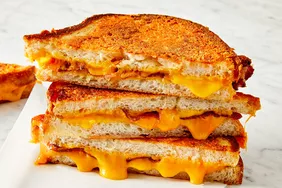

Simple Tasty Treat

Cheese - I prefer chedder or american but feel free to experiment.
Sliced Bread - Pick your favorite!
Butter
Cooking Instructions
Step 1: Preheat pan to low-medium heat.
Step 2: Grab 2 slices of bread and butter one side of each piece thoroughly.
Step 3: Add 1 slice of bread to pan butter side down
Step 4: Immediately place cheese on top of the slice of bread in the pan followed by the second slice butter side up.
Step 5: Cook for 2 to 3 minutes of until bottom is golden brown.
Step 6: Flip entire sandwhich and repeat step 5.
Step 7: Remove from pan and enjoy!
Note: Try making some tomato soup and dipping the sandwhich in the soup. Bon appetit!